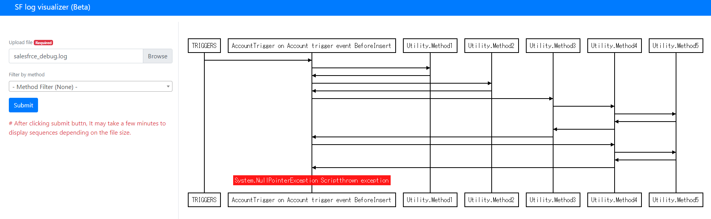

Welocome!
This is Salesforce log visualier. You can generate UML sequence from your salesforce debug logs. This application works by javascript. Salesforce debug log files you selected are not uploaded to server side. So this is very safe.
Usage
- Upload salesforce debug log file at left menu
- Click Submit button
- A few minutes later, you can get sequence diagram
- optionaly you can filter by methods
